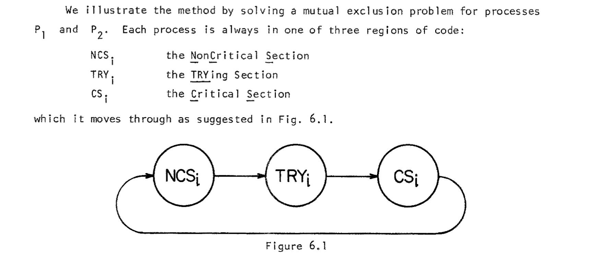
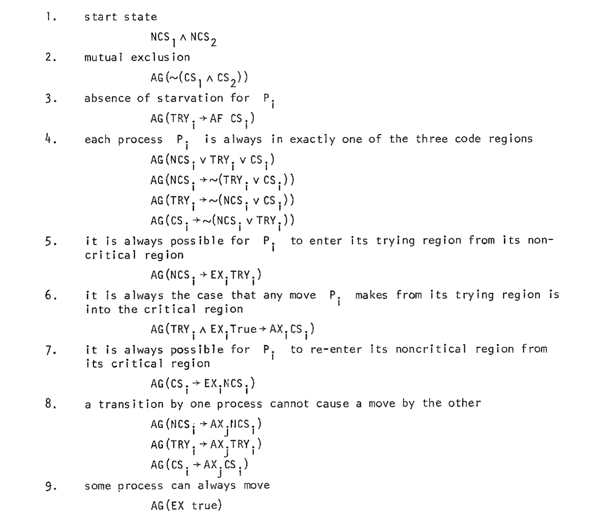
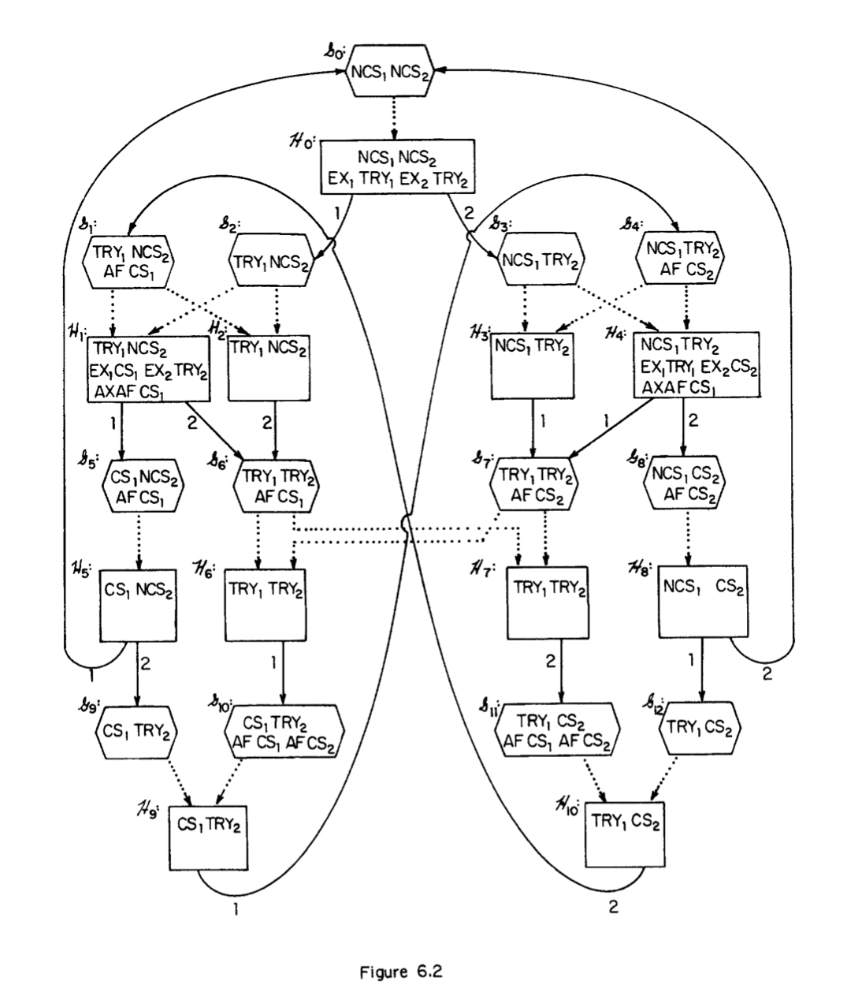
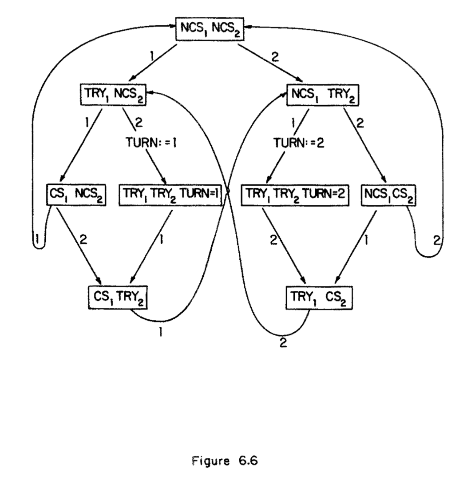
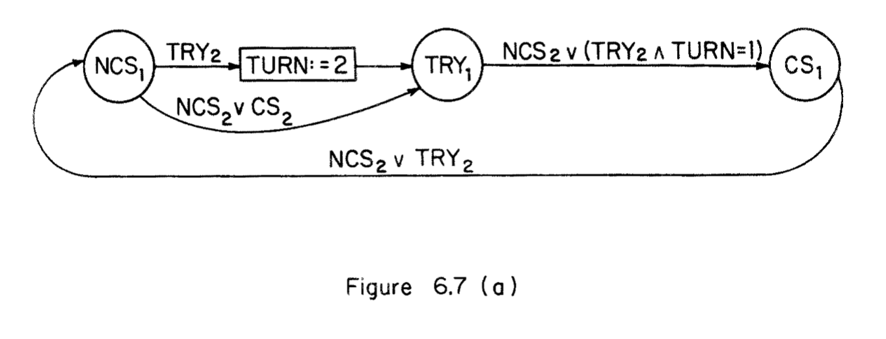
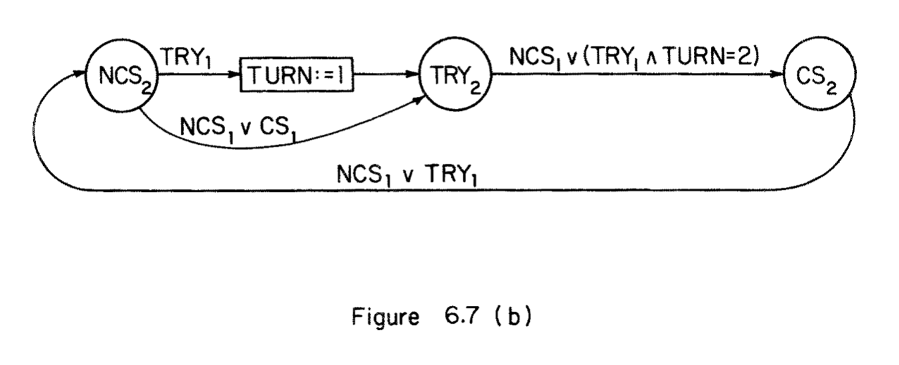

The verification problem: given system \(M\) and spec \(\varphi\), check that \(M \vDash \varphi\).
The synthesis problem: given spec \(\varphi\), find \(M\) such that \(M \vDash \varphi\).
The deductive approach (Manna and Waldinger 1980) tries to synthesize an input/output program by extracting it from a realizability proof.
Temporal synthesis considers specifications given in the form of LTL (or CTL), for example. Initial approach was to use satisfiability of a temporal formula as a way to derive \(M\) (Clarke and Emerson 1982). See also (Manna and Wolper 1984).
In (Clarke and Emerson 1982) they consider concurrent systems consisting of a finite number of fixed processes \(P_1,\dots,P_m\) running in parallel. They treat parallelism in the usual sense i.e. non-deterministic interleaving of the sequential atomic actions of each process. They use CTL as a specification language, and consider the semantics of CTL with respect to a (Kripke) structure \(M=(S,A_1,\dots,A_k,L)\), where
\(S\): countable set of system states
\(A_i \subseteq S \times S\): transition relation of process \(i\)
\(L\): assignment of atomic propositions to each state
They use a decision procedure for satisfiability of CTL formulae (similar to one described in (Ben-Ari, Manna, and Pnueli 1981)) as part of their synthesis procedure. Given a CTL formula \(f_0\), the decision procedure returns either “Yes, \(f_0\) is satisfiable or “No, \(f_0\) is unsatisfiable”. If \(f_0\) is satisfiable, then a finite model (structure) is also constructed. Their overall synthesis algorithm consists of the following high level steps:
Specify the desired behavior of the concurrent system using a CTL formula \(\varphi\).
Apply the decision procedure to the formula \(\varphi\) to obtain a finite model of the formula.
Factor out the synchronization skeletons of the individual processes from the global system flowgraph defined by the model.
They demonstrate this procedure on a simple, 2 process mutual exclusion example. Below is shown the description of the abstract states of each process, \(\{NCS_i, TRY_i, CS_i\}\):

and they give the specification of the mutual exclusion problem in CTL as follows:

From this they then construct a tableau \(T\) using their decision procedure:

and then from \(T\) they extract a finite model of the global program behavior:

Note they manually introduced an auxiliary variable \(TURN\) in order to distinguish states \(H_6\) and \(H_7\) in the tableau, which carries over into the extracted model.
After constructing the model representing the global program behavior, they extract “skeletons” for each individual process, which they seem to describe in a somewhat ad hoc manner i.e. they don’t give a formal algorithmic procedure for this. Note that this is pointed out in (Attie and Emerson 2001), which appears to give a more formal treatment of this extraction procedure. The final, extracted skeletons for process \(P_1\) and \(P_2\) are shown as follows:

